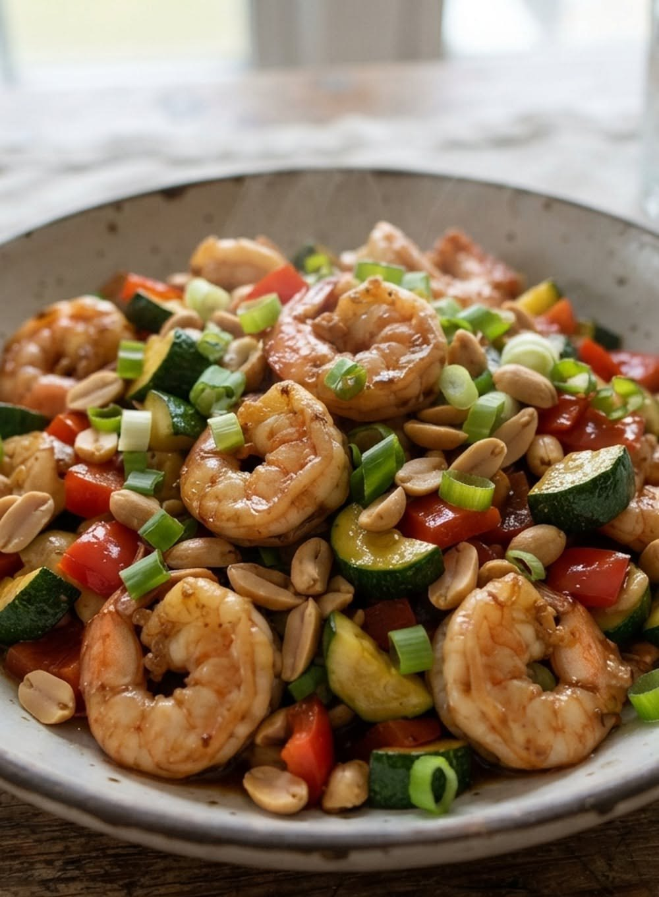
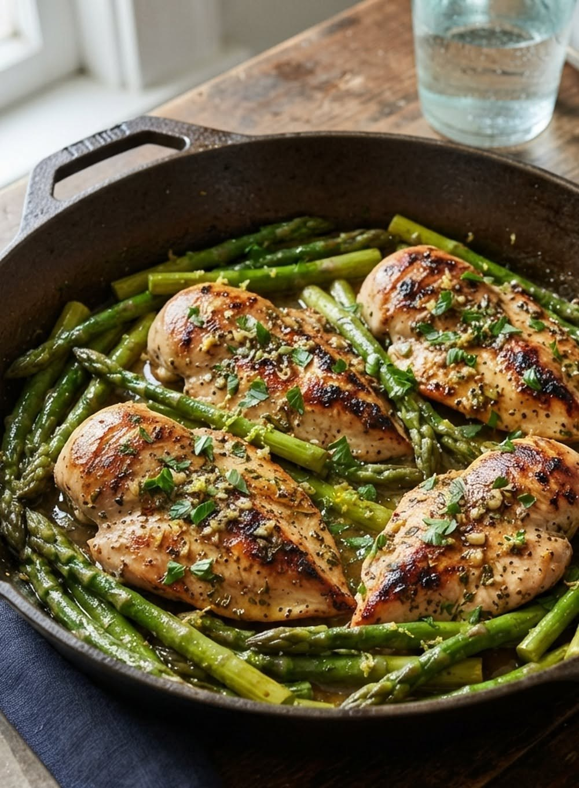
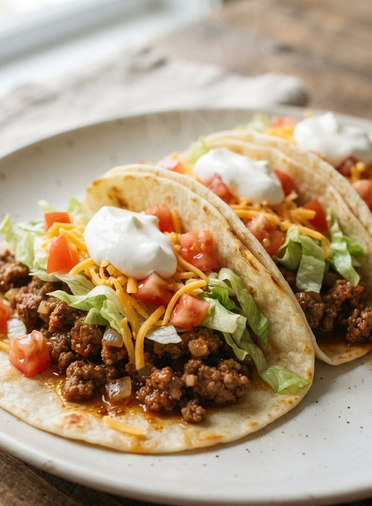
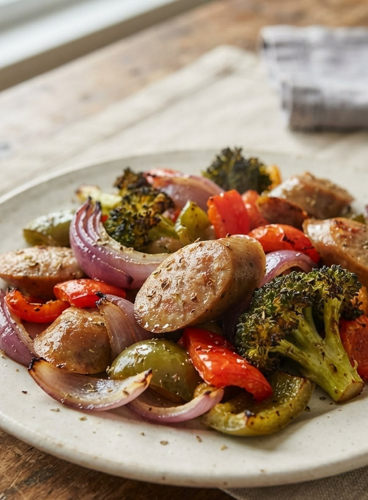
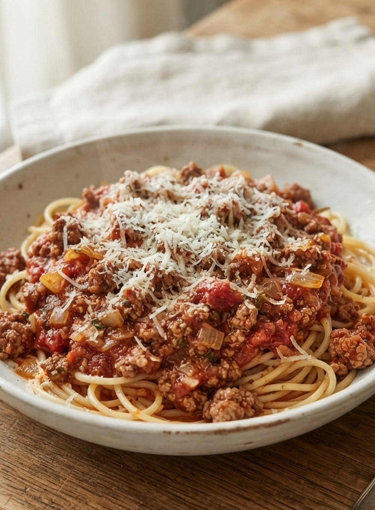

Recipe · Food
A 5-night dinner plan you can actually keep
Five dinners decided before the week starts, so Tuesday night is not a negotiation. The same list fits a weekly meal planner.





The five nights
Tuesday through Friday serve 4. Monday's shrimp serves 3. Eat the extra, or scale a night down.
- Step 1
Monday — 25-Minute Kung Pao Shrimp Stir-Fry. About 25 minutes, serves 3. Start the rice first. Skip this night if anyone avoids shellfish or peanuts.
- Step 2
Tuesday — 30-Minute Lemon Herb Skillet Chicken with Asparagus. About 30 minutes, serves 4. Keep the extra for lunch, or cook two breasts.
- Step 3
Wednesday — 25-Minute Ground Beef Tacos. About 25 minutes, serves 4. Warm the tortillas while the beef simmers.
- Step 4
Thursday — 35-Minute Sheet-Pan Sausage and Roasted Vegetables. About 35 minutes, serves 4. Broccoli, peppers, and red onion. Read the sausage label if anyone avoids gluten.
- Step 5
Friday — 50-Minute Spaghetti with Meat Sauce. About 50 minutes, serves 4 with leftovers. Start the sauce when you walk in.
Shop once
Buy for the nights you are actually cooking.
- Mondayshrimp, zucchini, red pepper, peanuts, scallions
- Tuesdaychicken breasts, asparagus, lemon
- Wednesdayground beef, flour tortillas, lettuce, tomato, cheddar, sour cream
- Thursdaysmoked sausage, broccoli, bell peppers, red onion
- Fridayground beef, spaghetti, crushed tomatoes, Parmesan
- staplessoy sauce, rice vinegar, honey, olive oil, chili powder, cumin, garlic, onion
How to keep it
Write the five names where you will see them on Sunday — a note on the fridge, or the weekly meal planner in What's 4 Dinner. Tuesday already has an answer.
If a night falls apart, swap two days. Do not redesign the week. If the sausage is sold out, cook the spaghetti early and move the sheet pan to Friday.
Want a different idea tonight? What's 4 Dinner spins a recipe by diet, cook time, and allergies.

More recipes
25-Minute Kung Pao Shrimp
Shrimp, zucchini, and peanuts in a sweet-spicy sauce.
Lemon Herb Skillet Chicken
Pan-seared chicken and asparagus in one skillet.
25-Minute Ground Beef Tacos
Seasoned beef, lettuce, tomato, cheddar, and sour cream.
All weeknight recipes
Shrimp, chicken, tacos, sausage, spaghetti, and a five-night plan.